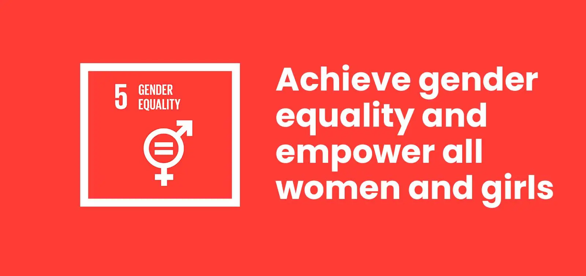

Date -- 27/6/2025
Goal 5 :Gender Equality

What is Goal 5?
Goal 5 of the UN Sustainable Development Goals aims to achieve gender equality and empower all women and girls. It calls for an end to discrimination and violence, and ensures equal access to education, healthcare, employment, and political representation.
Why Gender Equality Matters for India
India faces several gender-based disparities:
- Workforce participation: Women's labor force participation is significantly lower than global averages.
- Education: Girls face societal and infrastructural barriers, especially in rural regions.
- Representation: Women hold fewer leadership roles in politics and business.
- Safety and rights: Gender-based violence is still a major challenge.
Empowering women contributes to both social justice and economic growth.
Role of Computer Science & AI
Computer Science and AI can be powerful tools for accelerating progress toward gender equality:
- Data-driven policies: AI analyzes gender gaps in access to jobs, education, and healthcare.
- Predictive safety tech: Machine learning can help prevent gender-based violence.
- Inclusive design: Ethical coding reduces bias in hiring, diagnostics, and educational platforms.
- Digital access: Tech can connect women to education, entrepreneurship, and support systems.
- Amplifying voices: Algorithms can uplift diverse perspectives and fight misinformation.